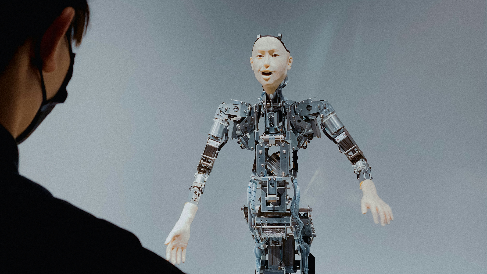

Modelos Generativos (GANs y GPTs)
Los modelos generativos son un tipo de inteligencia artificial que se enfoca en crear contenido nuevo a
partir de patrones aprendidos. Esto incluye la generación de imágenes, texto, música o incluso video. Dos de
los ejemplos más influyentes en este campo son las Redes Generativas Antagónicas (GANs) y los modelos de
lenguaje autoregresivos como GPT (Generative Pre-trained Transformer).
Las GANs consisten en dos redes neuronales que compiten entre sí: una genera datos (el generador) y la
otra evalúa si los datos son reales o falsos (el discriminador). A través de esta competencia, el generador
aprende a producir resultados cada vez más realistas. Las GANs han sido utilizadas para crear rostros
humanos que no existen, generar arte y hacer simulaciones realistas en videojuegos y cine.

Los GPTs, por su parte, están entrenados con enormes volúmenes de texto y son capaces de generar texto
coherente y contextualizado. GPT-3 y GPT-4, por ejemplo, pueden escribir ensayos, responder preguntas,
traducir idiomas, programar código e incluso imitar estilos literarios. Estos modelos usan la arquitectura de
transformers, que es altamente eficaz para entender el contexto y mantener coherencia en textos largos.
A pesar de su poder creativo, los modelos generativos plantean dilemas éticos: desde la creación de
deepfakes hasta la generación de desinformación o contenido ofensivo. Por eso, los investigadores están
trabajando en mejores controles, filtros y mecanismos de trazabilidad para asegurar un uso responsable.
Aun así, su potencial para revolucionar el arte, la comunicación, la educación y la ciencia es indiscutible.